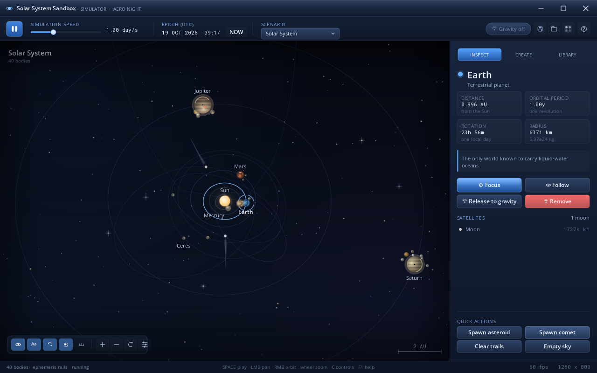
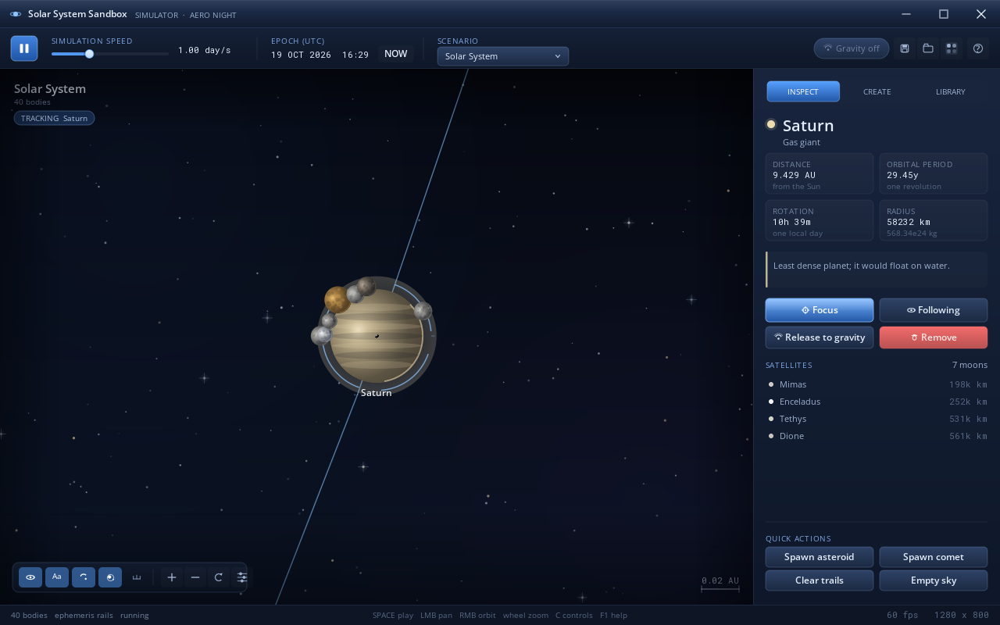
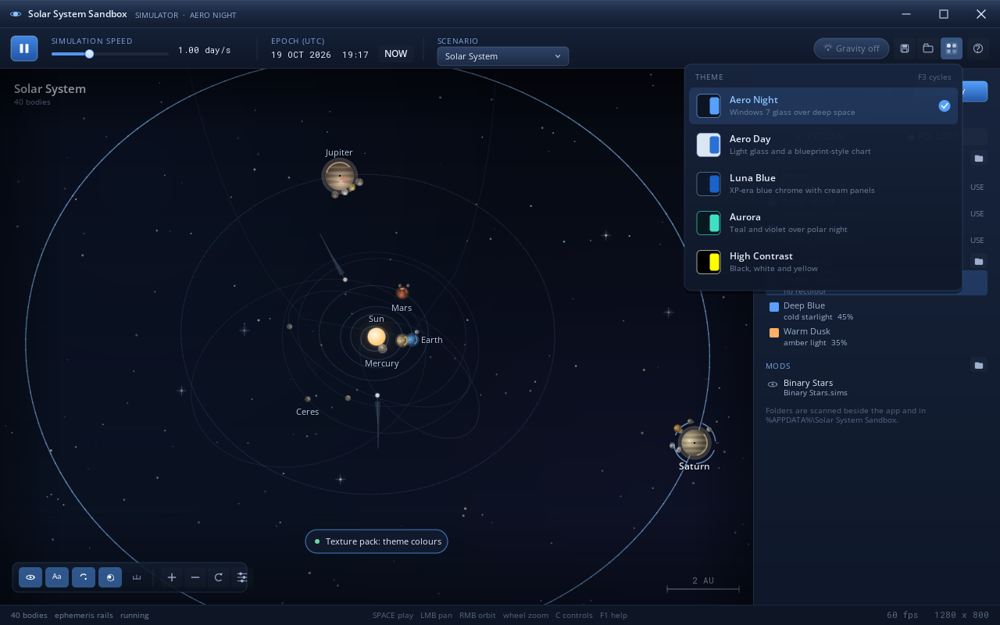
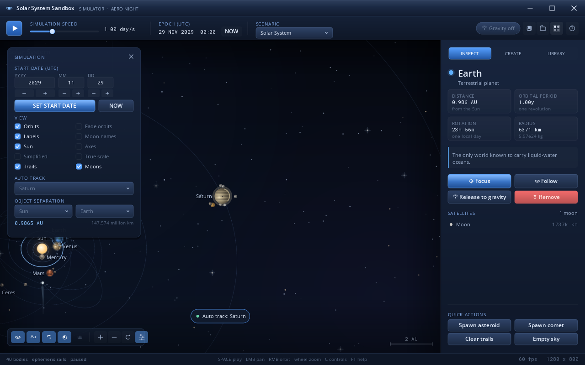
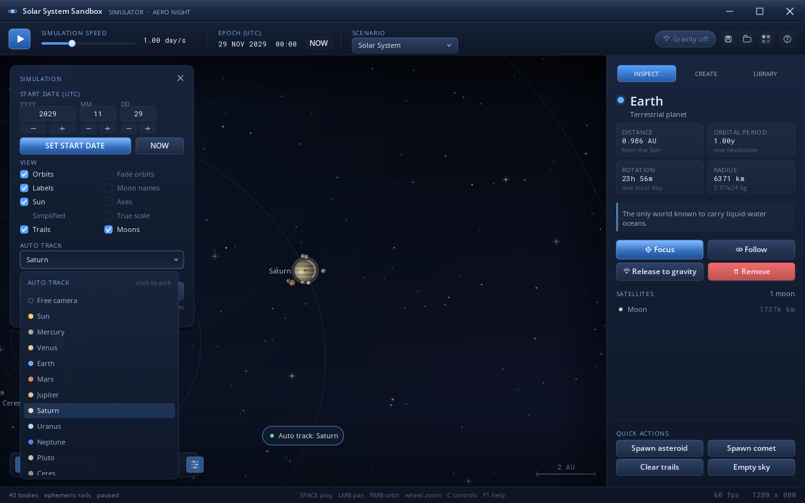
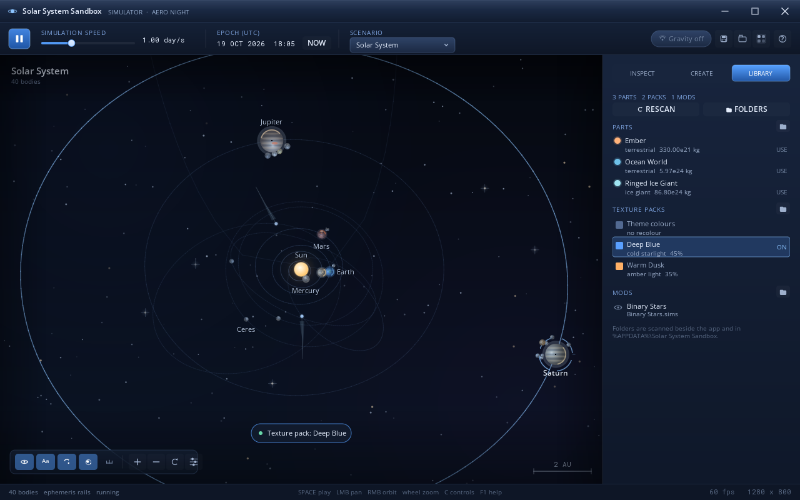
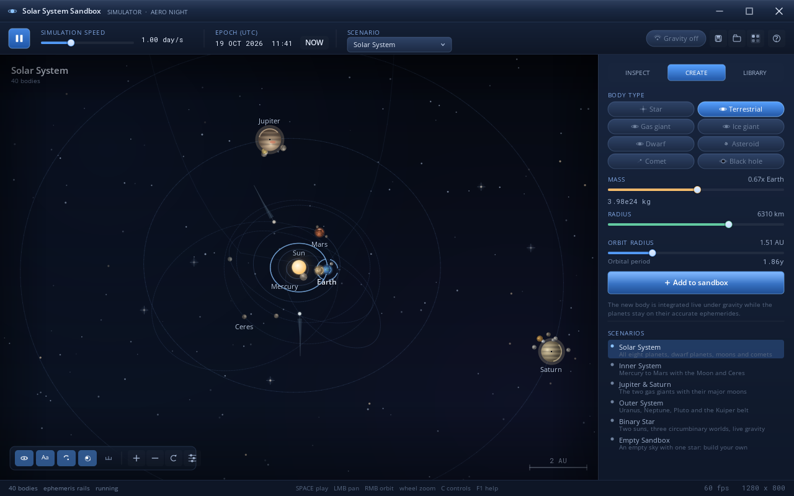

Real starting positions
Sun, eight planets, Pluto, Ceres, the major moons, comets and the asteroid belt, placed from JPL's approximate elements for 1800–2050. The clock starts today.
Windows 7 SP1 · 32-bit · no runtime
Forty worlds on JPL's approximate ephemerides, a velocity-Verlet gravity engine and drop-in content folders — wrapped in a hand-drawn Aero interface that ships as a single 320 KB native app.

What it does
Start with the actual sky. Pause time, jump to a date, or cut a planet loose and let Newton take over. Everything below runs in one 32-bit process with no runtime to install.
Sun, eight planets, Pluto, Ceres, the major moons, comets and the asteroid belt, placed from JPL's approximate elements for 1800–2050. The clock starts today.
Release a body from its rail and the scene switches to a velocity-Verlet N-body integrator. Collisions merge worlds, trails show the damage, and N toggles it all.
Aero Night, Aero Day, Luna Blue, Aurora and High Contrast recolour the shell, the scene and the installer. F3 cycles them; the choice is saved with your simulations.
Drop .part templates, pack.ini recolours and .sims scenarios into Parts, Texture Pack and Mods. The Library tab (F4) picks them up without a compiler.
C opens start-date spinners, orbit/label switches, fade, axes, simplified discs, a body-tracking picker and a live A/B separation readout.
No CRT, no .NET, no GPU — just GDI+ and the DLLs that ship with Windows 7. On one core or under 1.5 GB RAM it switches to a lighter scene and a 30 fps timer.
Screenshots
Every pixel is vector geometry through GDI+ — the starfield, the rings, the labels and the glass. These frames come straight from the headless render harness.






Compatibility
Windows 7 is the target, not an afterthought. The same 32-bit executable runs on later Windows versions too.
%APPDATA%\Solar System Sandbox, so logs, saves and mods keep working inside Program Files.The installer is 32-bit and requests administrator rights; on 64-bit Windows it installs to Program Files (x86).
Download
The setup wizard carries the app, the licence, the README, the screenshots and the sample parts, packs and scenario. Pick a theme on the welcome page, install, launch.
Version 1.0.02,343,936 bytesWindows 7 SP1+
e79bc7fb32b2dd0ad5a204d10f115c3e32c0392d948327a3b3a83fe0a67e80dd
N for N-body gravity, save the result to .sims.Unsigned hobby build. Windows may show “Unknown publisher” or a SmartScreen prompt. Choose More info → Run anyway; the source and every build is in the repository.
Prefer a portable copy? Clone the repo and run tools/build_windows.sh app — build/SolarSandbox.exe runs from any folder.